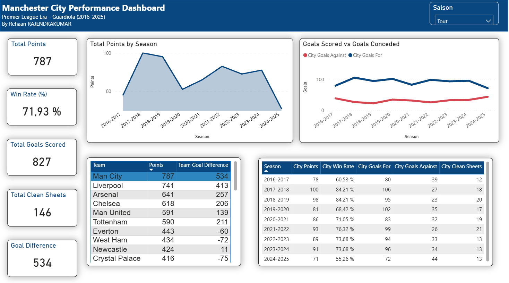
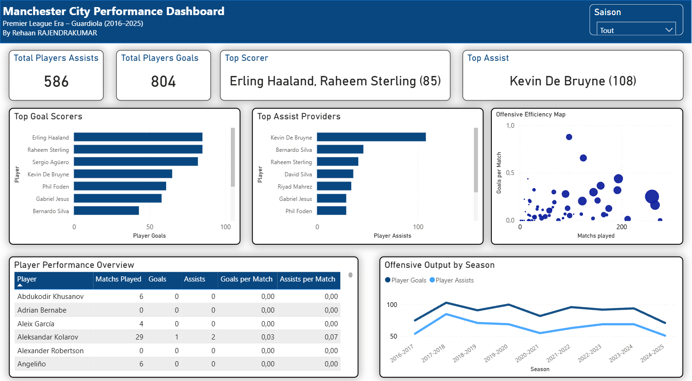
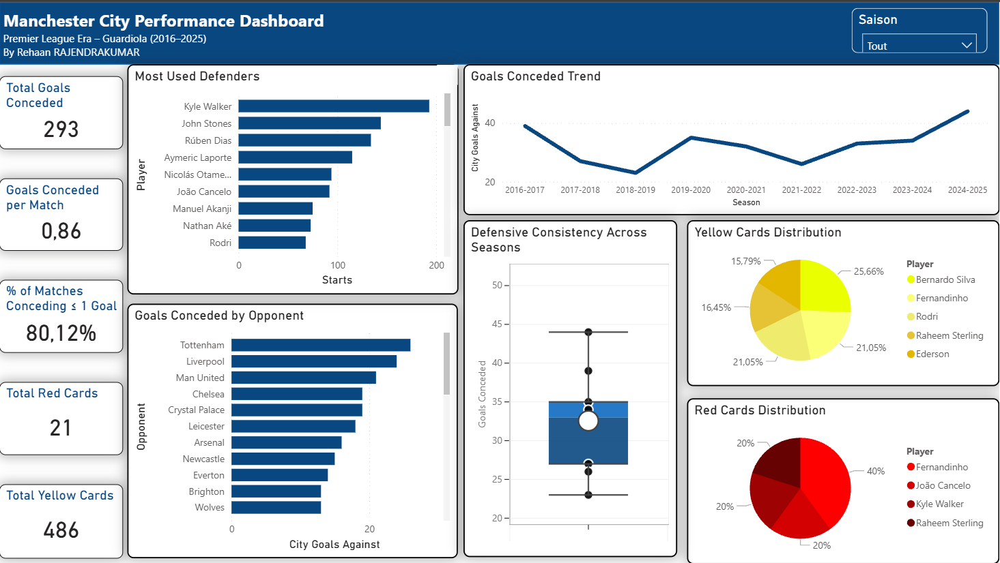

Ce projet est né d'une envie simple : apprendre Power BI en travaillant sur un sujet qui me passionne. J'ai choisi de construire un dashboard complet sur les performances de Manchester City de 2016 à 2025, en partant de données brutes.
Vue d'ensemble , résultats, buts, évolution saison par saison

Stats offensives , tops buteurs, passeurs, buts par saison

Analyse défensive , buts encaissés, clean sheets, comparaisons

En explorant les données saison par saison, plusieurs tendances se dégagent clairement.
La première saison, 2016-2017, est celle de la construction : 78 points, 60% de win rate, et Man City termine 3ème derrière Chelsea. Guardiola apprend encore à adapter son style à la Premier League. Dès 2017-2018, la machine est lancée : 100 points, 84% de win rate, 106 buts marqués et seulement 27 encaissés. C'est la meilleure saison de l'ère Guardiola sur le plan des points. La saison suivante, 2018-2019, confirme ce niveau avec 98 points, mais Liverpool pousse jusqu'à 97 — une des plus grandes courses au titre de l'histoire de la Premier League.
2019-2020 marque un coup d'arrêt : 81 points et Liverpool qui écrase tout avec 99 points. Mais ce qui est frappant dans les données joueurs, c'est que sur cette période, ce sont des milieux qui terminent meilleurs buteurs. En 2020-2021, c'est Gündogan avec 13 buts en 28 matchs, soit 0,46 but par match depuis un poste de milieu relayeur. C'est le signe du jeu de Guardiola où tout le monde peut marquer, même sans avant-centre attitré.
La saison du triplé historique est aussi celle qui fait exploser les compteurs offensifs. Haaland inscrit 36 buts en 35 matchs, soit 1,03 but par match — un ratio qui n'a aucun équivalent dans les données. Kevin De Bruyne compile 16 passes décisives. Défensivement, cette saison est aussi l'une des plus solides : 33 buts encaissés, seulement 1 carton rouge, et 84% des matchs avec maximum 1 but encaissé. C'est l'équipe la plus complète que les données révèlent sur les 9 saisons.
Les données de la dernière saison racontent une histoire difficile. 44 buts encaissés contre 33 la saison précédente, seulement 63% des matchs avec 1 but max, et une moyenne de 1,16 but encaissé par match — le pire chiffre de toute la période analysée. La blessure de Rodri, pilier défensif et premier défenseur le plus utilisé sur plusieurs saisons consécutives, se lit clairement dans les chiffres. L'effectif défensif se recompose avec Gvardiol repositionné et des profils moins rodés au système. Sur les 9 saisons, c'est la seule où la défense semble avoir perdu ses repères.
Ce qui m'a le plus surpris en analysant ces données : la corrélation entre la solidité défensive et les titres. Les meilleures saisons offensivement ne sont pas toujours les plus titrées. C'est la combinaison des deux qui fait la différence, et les chiffres de 2022-2023 l'illustrent parfaitement.